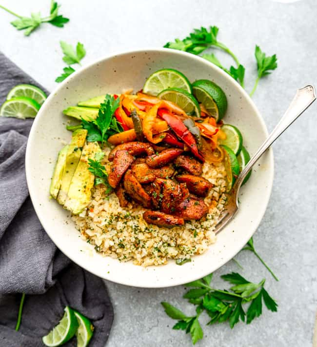

Keto Chicken Burrito Bowl in 30 Minutes!

Description
Keto Chicken Burrito Bowl is my all time favorite dish when I'm short on time to prepare meals.
It's nutritious, tasty, and more importantly, it's extremely easy to make.
Ingredients you need
This recipe will give you 4 persons servings.
- Marinated chicken 600g
- Cauliflower rice 800g
- Vegetables of your choice
- Sliced avocado
- Limes
Steps to follow
- Boil or stir fry chicken for 20 minutes
Feel free to marinate the meat. I'm skipping it because this I want to make my dish in 30 minutes.
- Cook cauliflower rice
While making chicken, poor the frozen cauliflower rice into the pot.
Cook it for 15 minutes in the pot. Cover the pot with lid for 10 minutes and leave the pot open for 5 minutes. Stir the rice occasionally.
💡 Tips: I usually use frozen cauliflower rice.
- Stir fry vegetables
I usually pick up vegetables in season.
- Slice avocado and lime to place on the bowl
- Be creative to plate your dish
Place rice on the bowl, drop chicken on top, and add avocado, limes, stir-fried vegetables.
- Enjoy your meal!
Check out other recipes!